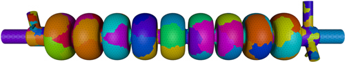

Interfaces | Services | Mesh Geometry | Mesh Curving | Mesh Smoothing | Mesh Swapping | Adaptive Loops | Front Tracking | Dynamic Services | Search and Sort | Visit Plugins | iMeshIO | IPComMan | Mesh Adapt Service | Petascale Meshing | Shape Optimization | AMR Front Tracking | Solution Transfer
Dynamic parallel data services, such as parallel partitioning, dynamic load balancing, data migration, unstructured communication maps, and geometrically-based processor searches, are crucial to petascale performance of mesh-based simulations. For example, with adaptive mesh refinement, processor workloads change as elements are added and deleted; dynamic load balancing and data migration are needed to redistribute work after adaptation. Our experiments on the IBM BG/L have shown that even differences of 5-10% between the maximum and average processor workloads can lead to dramatic losses of scalability in applications. Similarly, unstructured communication maps and geometrically-based processor searches are key components of solution transfer schemes. Although many frameworks implement these services internally, their implementations are data-structure specific, preventing interoperability with components not in the frameworks. We are developing dynamic services that work through the ITAPS interfaces, allowing them to be used easily by SciDAC applications.
In particular, we have adopted the Zoltan Dynamic Load-Balancing toolkit to provide load balancing services to ITAPS applications such as accelerator design, subsurface transport, and climate modeling. Zoltan contains a suite of parallel dynamic load-balancing methods, including geometric, graph-based, and hypergraph-based algorithms as well as interfaces to the popular graph-partitioning packages PT-Scotch and ParMETIS. In SciDAC-2, we have extended Zoltan's capabilities by developing a mesh-based service using the ITAPS iMesh and iMeshP interfaces. Our new dynamic service, iZoltan, allows iMesh and iMeshP implementations to easily compute new mesh distributions, migrate entities to new parts, and update iMeshP part and partition information. We have demonstrated the effectiveness and interoperability of our serial partitioning capability using the iMesh interfaces to FMDB, MOAB, and GRUMMP; our parallel capabilities have been tested and adopted in FMDB. Zoltan is open-source and is widely used in the national laboratories, academia, and industry, with over 1800 downloads since 2001.
Going forward, we will extend iZoltan's capabilities to handle arbitrary partition objects (for specialized cases such as boundary layers), user-specified partition entities and adjacencies, and hierarchical partitioning for large number of parts and processors. In collaboration with the CSCAPES Institute, we will also incorporate and extend the petascale partitioning techniques developed under ITAPS.